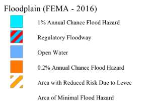
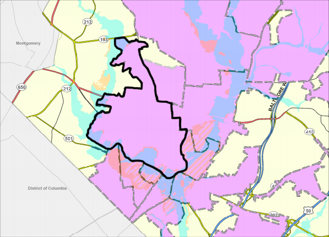
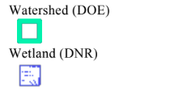
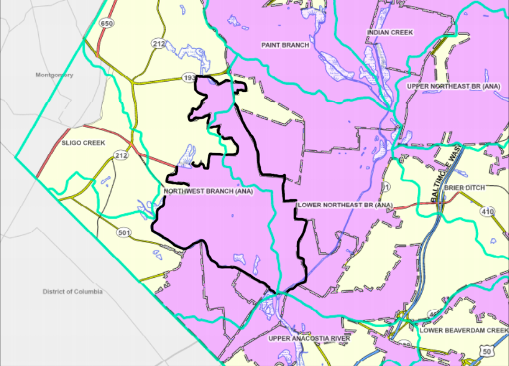
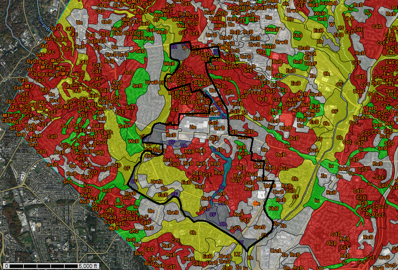
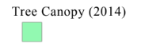
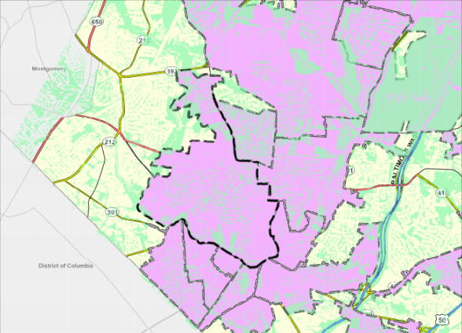
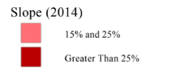
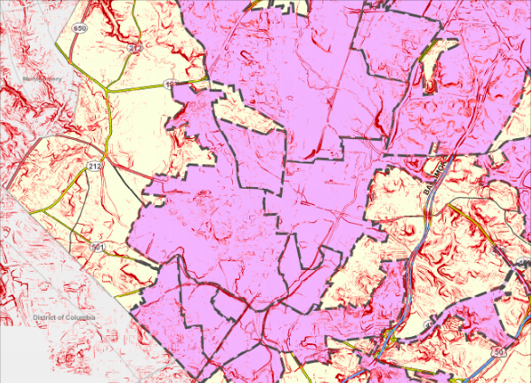
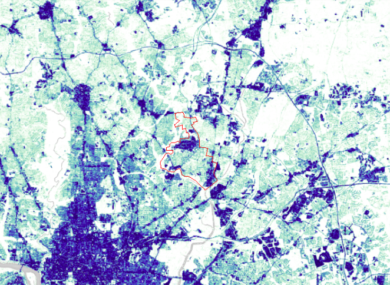

Flood View
The largest flooding areas are located along the Northwest Branch of the Anacostia Watershed west of the city boundary, from the southernmost point of Hyattsville to University Hills Duck Pond Park up north. The most critical locations of flooding include Magruder Park, nearby West Hyattsville Metro Station areas, and University Hills Duck Pond Park.


Watershed View
A ridge, represented in teal blue in this map, runs directly in the middle of Hyattsville: this boundary splits the Anacostia River into Northwest and Northeast branches. This means that Hyattsville occupies simultaneously two watersheds.


Soil View
It is evident that Hyattsville has a diverse range of soil types; however, the most important ones here include flood-prone soils. These flood-prone soils are highlighted in blue. Many flood regions lie along the edge of the city limits by bodies of water such as the Northeast and Northwest Branches of the Anacostia River and University Hills Pond Park. Other flood regions are situated along areas where there is a high amount of impervious surfaces (The Mall at Prince George’s, Northwestern High School, residential areas).


Tree Canopy View
Insert the analysis in place of these text.
A new paragraph maybe but these are filler text.


Slope View
Insert the analysis in place of these text.
A new paragraph maybe but these are filler text.


Impervious Surface View
Impervious surfaces of Hyattsville. The city is approximately outlined in red. The largest concentrations of impervious surfaces include mostly pavemented areas - The Mall at Prince George’s, Northwestern High School, Route 1 area and the surrounding neighborhoods and businesses, West Hyattsville residential areas and metro station.

×